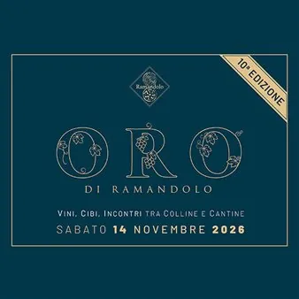

sab 14 nov · dalle 10:00
10^ edizione Oro di Ramandolo
14 novembre Nimis Attorno a San Martino - 12 novembre, quando per tradizione si chiude l'annata agraria - quell'uva color ambra, lasciata appassire al sole o sui graticci, entra nei torchi per diventare Ramandolo DOCG: un vino - si legge nel disciplinare - "di color oro…
 Indicazioni
Indicazioni
- Costi e prenotazioni
- Costo non indicato · Prenotazione non indicata
- Programma
- Programma da verificare. Apri la fonte ufficiale per orari e possibili aggiornamenti.
- In caso di maltempo
- Nessuna indicazione specifica pubblicata.
- Note
- Acquisito automaticamente dalla fonte.
L’EVENTO
Descrizione completa
Attorno a San Martino - 12 novembre, quando per tradizione si chiude l'annata agraria - quell'uva color ambra, lasciata appassire al sole o sui graticci, entra nei torchi per diventare Ramandolo DOCG: un vino - si legge nel disciplinare - "di color oro, leggermente tannico, di corpo, amabile, con profumo di acacia e di frutta matura". E all'Oro di Ramandolo che esce dal torchio è dedicata questa festa, un evento promozionale itinerante che è diventato un appuntamento da non perdere per tantissimi appassionati. PROGRAMMA
Ore 10.00 Apertura reception presso la Cantina "I Comelli" - via Valle - Nimis. Gli ospiti potranno parcheggiare negli spazi segnalati adiacenti o nell'area retrostante il Ristorante Paradiso (a 1 km, direzione Tarlano) servita dai minibus navetta.
ore 10.30 Inizio degustazioni. Gli ospiti (muniti di braccialetto di accesso, bicchiere e menu-programma) potranno gustare l'aperitivo (vini bianchi fermi e spumanti del territorio) accompagnato dalle eccellenze dell'agroalimentare. Dopo l'aperitivo (e i primi due "assaggi" di altrettanti ristoratori) gli ospiti a bordo dei pulmini raggiungeranno le altre tappe del tour, dove ristoratori, vignaioli e "artigiani del gusto" li accoglieranno con assaggi di piatti di stagione e tradizione accompagnati dal Ramandolo DOCG, dal Refosco (che in queste colline esprime tutta la sua eleganza) e dagli altri vini del territorio.
ore 12.30 Chiusura reception. In relazione all'affluenza del pubblico e alle condizioni meteo, l'organizzazione si riserva di chiudere anticipatamente, garantendo comunque l'ingresso agli ospiti già in possesso del ticket. Si consiglia tuttavia di arrivare entro Ie ore 13.OO per poter gustare iI tour in modaIità "sIow".
Ore 14.30 Apertura buffet dei dolci. Nella location "base", il salato cede il posto al dolce. Apertura del "banco d'assaggio del Ramandolo DOCG.
Ore 17.00 Chiusura delle degustazioni (tranne la location base). I pulmini a partire da quest'ora garantiranno a tutti il rientro alla tappa di partenza ma non il trasferimento tra tappe intermedie.
Ore 18.30 Chiusura della manifestazione e... arrivederci al 2027!
ACQUISTA I TICKET IN PREVENDITA online o presso tutti gliesercizi di ristorazione e i vignaioli che partecipano all'iniziativa al prezzo scontato di 65,oo € fino a venerdì 30 ottobre. Dopo tale data il costo dei biglietti (salvo esaurimento anticipato dei posti disponibili) sarà di 75,00 €.
IL PROGRAMMA
Programma e orari
Appuntamenti raccolti dalle fonti elencate. Dove manca un orario, non è ancora disponibile in questa scheda.
Programma pubblicato
- Ore 10.00 Apertura reception presso la Cantina
- ore 10.30 Inizio degustazioni.
- ore 12.30 Chiusura reception.
- Ore 14.30 Apertura buffet dei dolci.
- Ore 17.00 Chiusura delle degustazioni (tranne la location base).
INFORMAZIONI UTILI
Prima di partire
- Controllare la fonte prima di partire.
ORGANIZZAZIONE